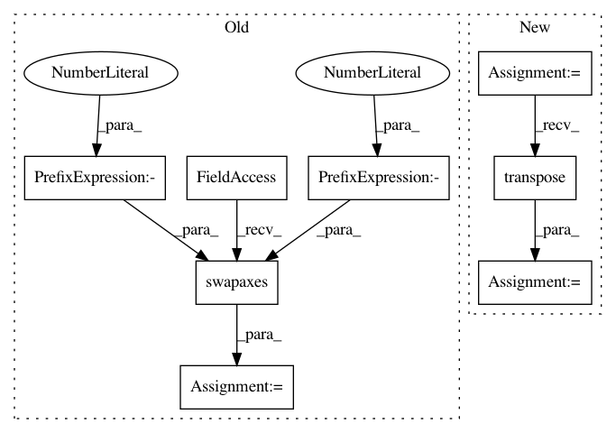

9385ae282aed6cf4a0f6ce70885d6bf9a913b991,geomstats/geometry/invariant_metric.py,InvariantMetric,inner_product_matrix,#InvariantMetric#Any#,163
Before Change
left_or_right=self.left_or_right)
inv_jacobian = gs.linalg.inv(jacobian)
inv_jacobian_transposed = gs.swapaxes(inv_jacobian, axis1=-1, axis2=-2)
n_base_points = base_point.shape[0]
inner_product_mat_at_id = gs.array(
[self.inner_product_mat_at_identity[0]] * n_base_points)
After Change
left_or_right=self.left_or_right)
inv_jacobian = GeneralLinear.inv(jacobian)
inv_jacobian_transposed = Matrices.transpose(inv_jacobian)
n_base_points = base_point.shape[0]
inner_product_mat_at_id = gs.array(
[self.inner_product_mat_at_identity[0]] * n_base_points)
In pattern: SUPERPATTERN
Frequency: 4
Non-data size: 8
Instances
Project Name: geomstats/geomstats
Commit Name: 9385ae282aed6cf4a0f6ce70885d6bf9a913b991
Time: 2020-04-14
Author: ninamio78@gmail.com
File Name: geomstats/geometry/invariant_metric.py
Class Name: InvariantMetric
Method Name: inner_product_matrix
Project Name: geomstats/geomstats
Commit Name: c9e2425482a6fc3fb2c924b99f2906a707c916fb
Time: 2020-04-14
Author: ninamio78@gmail.com
File Name: geomstats/geometry/spd_matrices.py
Class Name: SPDMatrices
Method Name: random_tangent_vec_uniform
Project Name: geomstats/geomstats
Commit Name: c9e2425482a6fc3fb2c924b99f2906a707c916fb
Time: 2020-04-14
Author: ninamio78@gmail.com
File Name: geomstats/geometry/stiefel.py
Class Name: Stiefel
Method Name: belongs
Project Name: geomstats/geomstats
Commit Name: c9e2425482a6fc3fb2c924b99f2906a707c916fb
Time: 2020-04-14
Author: ninamio78@gmail.com
File Name: geomstats/geometry/stiefel.py
Class Name: Stiefel
Method Name: random_uniform